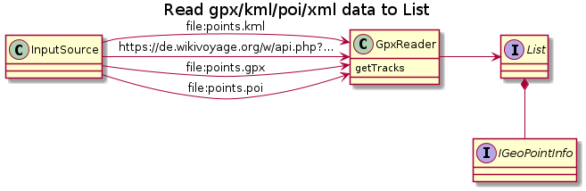

public class GpxReader<T extends IGeoPointInfo> extends GpxReaderBase implements IGeoInfoHandler
Class to read List of IGeoPointInfo points from gpx/kml/xml/… file or stream.

GpxReader<IGeoPointInfo> parser = new GpxReader<IGeoPointInfo>();
List<IGeoPointInfo> points = parser.getTracks(new InputSource(new FileReader( "test.gpx")));
for (IGeoPointInfo geo : points) {
System.out.print(String.format("got lat=%f lon=%f\n", geo.getLatitude(),geo.getLongitude()));
}
Supported formats:
Inspired by http://stackoverflow.com/questions/672454/how-to-parse-gpx-files-with-saxreader
currentGeoPoint, mReuse, onGotNewWaypoint| Constructor and Description |
|---|
GpxReader()
Creates a new GpxReader.
|
GpxReader(GeoPointDto reuse)
Creates a new GpxReader.
|
| Modifier and Type | Method and Description |
|---|---|
java.util.List<T> |
getTracks(org.xml.sax.InputSource in)
Call the parser and return the points contained in the stream
|
boolean |
onGeoInfo(IGeoPointInfo geoInfo)
Is called for every completed gpx-trackpoint to collect the received tracks.
|
characters, createGeoUriParser, endElement, getLatOrLong, newInstance, newInstance, parse, startElementpublic GpxReader()
Creates a new GpxReader.
public GpxReader(GeoPointDto reuse)
Creates a new GpxReader.
reuse - if not null this instance is cleared and then reused for every new gpx found. This way the reader can load different implementations of IGeoPointInfopublic java.util.List<T> getTracks(org.xml.sax.InputSource in) throws java.io.IOException
Call the parser and return the points contained in the stream
java.io.IOExceptionpublic boolean onGeoInfo(IGeoPointInfo geoInfo)
Is called for every completed gpx-trackpoint to collect the received tracks.
onGeoInfo in interface IGeoInfoHandler